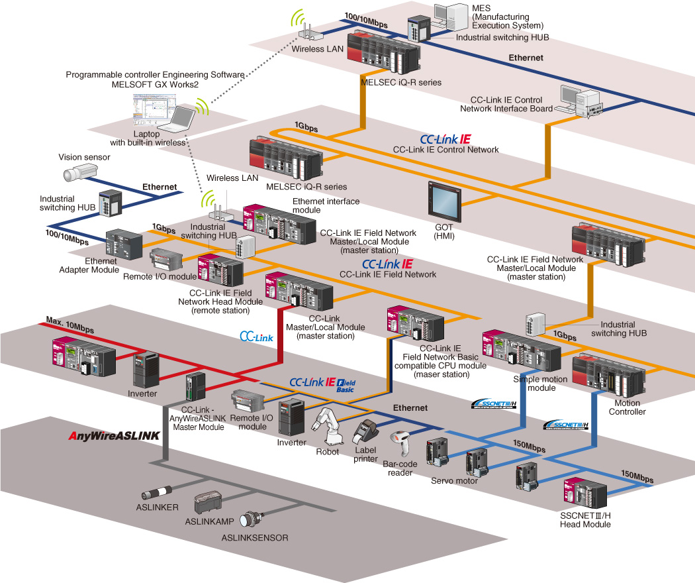

Controllers MELSEC-L Series
Product features -Network-


Network diagram
Seamless integration of multiple networks
Enhanced information communication by networking is the essential requirement in the automation industry. The MELSEC-L Series provides an open and seamless network environment integrating the following different level of automation networks: CC-Link IE; high-speed and large capacity Ethernet-based integrated open network that connects shop floor and IT system as the core of e-F@ctory, CC-Link; SEMI certified global standard network originating from Japan and Asia, and AnyWire; sensor level distributed control network.
